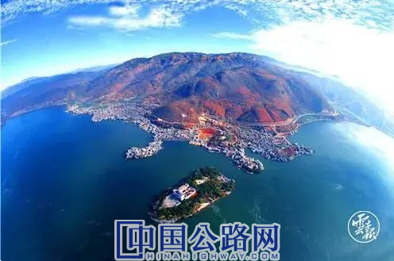

什么叫最美的风景在路上？
最好的诠释应该就是
行驶在四季有绿、四季开花的路上
享受
“车在路上行，人在画中游”
昆明绕城东南段最美隧道
近年来
云南将绿色发展理念
全面融入公路建设
规划、施工、运营及养护全过程
积极创建“绿色公路”
打造高速公路美丽“新名片”

大丽高速公路
2019年，云南提出，将全力打造昆明至大理至丽江、昆明至西双版纳景洪至磨憨、昆明长水机场3条最美丽高速公路，对公路沿线采取净化、绿化、美化等综合整治措施，进一步提升周边人居环境质量，打造展示中国最美丽省份建设的景观带和风景线。
如今
这3条美丽公路
改造得如何？
跟随小布一起来看
��
中国最美丽省份的亮丽风景线
“路景交融、轻松舒畅”
3条美丽公路建设
全面融入了
“畅、安、舒、绿、美、融”
理念的美丽公路
正成为云南打造
中国最美丽省份的亮丽风景线
01
昆明至大理至丽江高速
一路向西
昆明至大理至丽江高速公路
沿着青山探秘境
一条绿色生态走廊、景观大道
文化之路、智慧之路显现雏形
昆明至大理至丽江高速公路绿化美化设计全长484公里，涉及昆明、玉溪、楚雄、大理、丽江5个州市、12个县市区。
绿化美化工程以“一条玉带衔明珠 一路青山探秘境”为主题，规划定位为一条绿色生态走廊道、一条景观大道、一条文化之路、一条智慧之路。
02
昆明至西双版纳至磨憨高速
一条绿色生态景观廊道
门户大道、茶马文化之路
智慧之路即将改造完成
尽展滇南门户风采
雨林大道（小磨高速公路）
昆明至西双版纳景洪至磨憨高速公路全长677公里，涉及昆明、玉溪、红河、普洱、西双版纳5个州市、13个县市区。
绿化美化工程以“展滇南门户风采 览云岭钟灵毓秀”为主题，规划为一条绿色生态景观廊道、一条门户大道、一条茶马文化之路、一条智慧之路。
03
昆明长水机场高速
今年国庆期间
改造升级后的昆明主城区至
昆明长水国际机场美丽公路
给人们留下了深刻印象
游客纷纷感叹：
“从机场出发，一路繁花相送，
长途的疲惫都一扫而光。”
一路美景，处处惊喜
云南省交通投资建设集团有限公司运营管理部相关负责人介绍，云南省结合高速公路沿途自然环境现状、气候条件、地域民族文化特色等因素，实施了景观提升工程，力争将高速公路打造成具有多层次、多树种、多色彩、多功能、多效益，四季常绿、季相分明，四季有花、特色鲜明，景观质量效果全面提升，驾乘体验显著改善的绿色廊道。
生态低碳环保的绿色公路
除了以绿色景观大道为载体
使人在山水中徜徉
享受美丽的风光外
美丽公路的内涵还体现在以
绿色生态、低碳环保、环境友好为美
的建设理念上
“要实现公路建设与环境保护双赢，必须牢固树立‘最大限度保护、最大限度恢复’的和谐共生理念，尊重自然、顺应自然、保护自然。”2017年6月21日，全省加快高速公路建设推进会议要求：
绿色公路这样建
严守生态功能保护基线、环境质量安全底线、自然资源利用上线“三大红线”，做到生态选线、环保设计；
集约利用资源，努力提高土地等要素资源的利用效率，谋求高速公路建设进度与品质的最大成效；
大力引进新技术、新工艺，积极推广新能源、新材料，建设绿色高速公路，实现绿色发展方式与高速公路建设的深度融合。
澄川高速公路
这些公路在建设过程中
遵循了绿色发展理念
��
01
小磨高速
青山卧巨龙（小磨高速公路）
为了给亚洲野象群的过往预留通道，小磨高速公路项目在勐腊—尚勇段采用下穿建设方式，避让了亚洲象迁徙通道，并将曼纳庄等4处隧道上方的橡胶林恢复为天然林。
02
大丽高速
大丽高速公路
大丽高速公路对环境保护工作实施全方位控制，做到不随意砍伐一棵树木、损失一寸土地、污染一片水源。
首开全省之先河，对公路途经区域内的原生植物进行移植，用于大丽高速公路沿线绿化，并在局部有古树的地段通过调整线路，为古树“让路”。
在云南还有很多
这样的美丽绿色公路
“样板工程”
��
●麻昭、香丽、小磨、武易4条高速公路入选部级绿色公路试点建设示范工程；
武易高速公路
●华坪至丽江高速公路大理连接线（大理段）“大营绿色低碳服务区”示范创建、呈澄高速无人化智慧运营项目分别入选2017年、2018年省级低碳示范项目。
华丽高速公路
●怒江美丽公路主道已于2019年年底建成通车，成功打造了“路在江边走、车在画里行、人在景中游”的怒江大峡谷最美公路。
怒江美丽公路
随着云南交通建设
向低碳节能环保方向发展持续推进
一条条美丽公路
正逐步擦亮云南交通发展的生态底色
成为中国最美丽省份的亮丽风景
【编辑：任燕 QQ：360638367；TEL：13146474233】
【审核：耿茁、孙婧】

 来源：云南日报
来源：云南日报
 时间：2020-11-23
时间：2020-11-23
 微信公众号
微信公众号 微信订阅号
微信订阅号